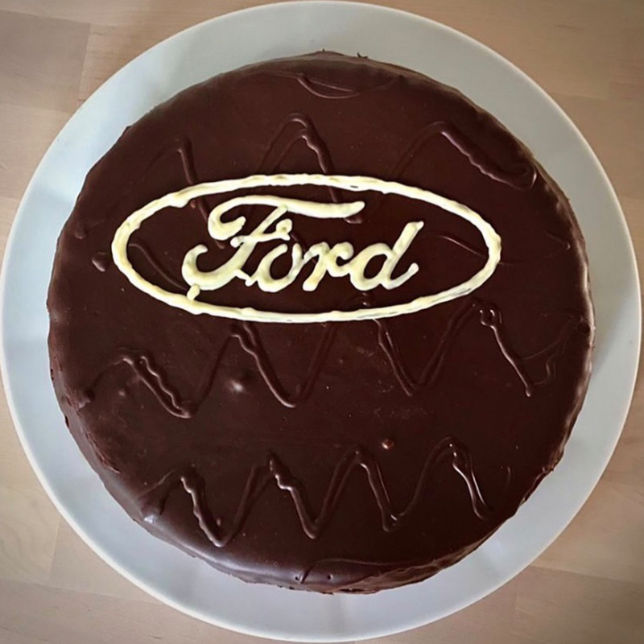

Le torte brutte in tavola sono come i concerti barocchi nella storia della musica: un’arte sottile. Senza l’amaro, amico mio, il dolce non è tanto dolce e senza il brutto, il bello non è poi tanto bello.
ULTIMI POST

Le torte brutte sono torte leggere come l'aria. Sono senza zucchero raffinato, burro e derivati del latte.
Tutti meritiamo il meglio. Ecco perché abbiamo creato prelibatezze brutte con ingredienti naturali lavorati con attenzione. Questa è un’ottima alternativa ai prodotti pesanti di massa realizzati con derivati animali. Qualcosa
che incorpora un vero benessere a base vegetale e denso di nutrienti, promuovendo allo stesso tempo la sostenibilità.